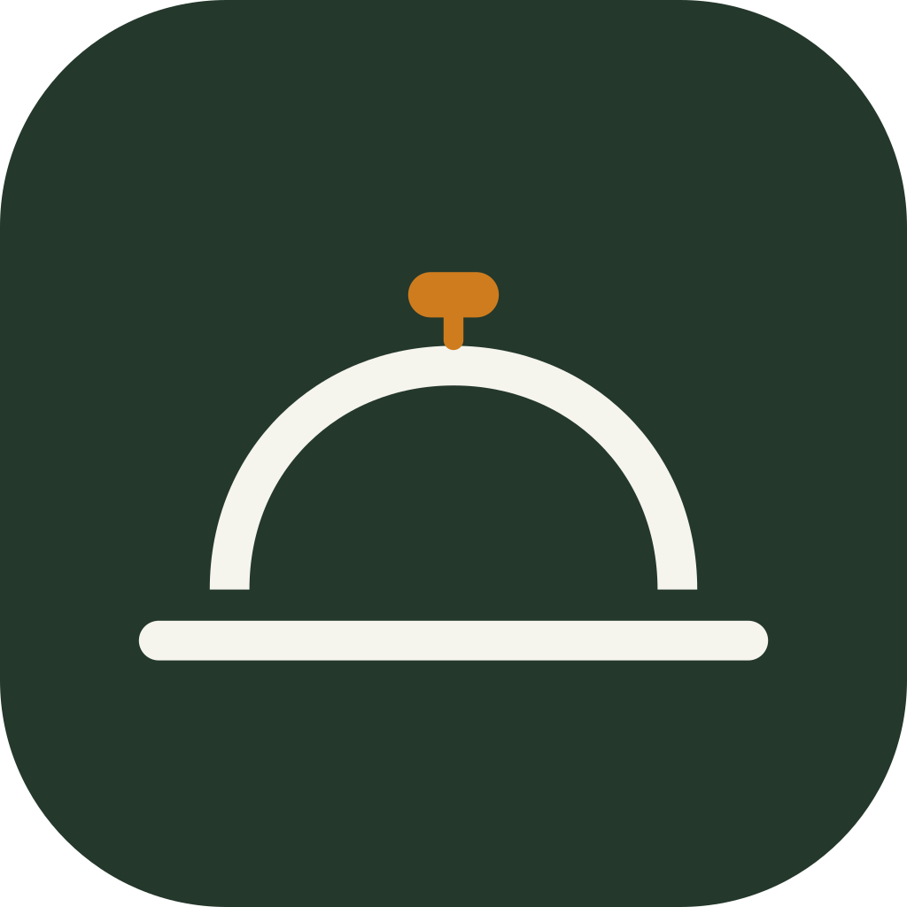

Butlery · Skärmar v12 — del 2 · familj, socialt, inköp, konto
Familjeflödet och menyplacering, Mer-fliken och det sociala lagret, inköpets kärnvy, chatt, kontosäkerhet och gruppdetalj. Innehållsförteckning och de andra delarna: Skärmar v12.
Familjeflödet + menyplacering + onboarding
Vem åt"Lagat idag" öppnar ark: bocka i vilka som åt — ej valda tonas ned (ur who_is_eating_sheet).
Recept
Krämig svamppasta med timjan
Vem åt ikväll?
Krämig svamppasta med timjan
M
Malin
Vuxen
J
Jonas
Vuxen
E
Ebba
Barn 7–12
Klar — 2 åt
Hoppa över
BetygVad tyckte ni? — stjärnrad per person som åt, privat för hushållet (ur family_rating_entry_view).
Vad tyckte ni?
Krämig svamppasta med timjan
M
MalinDU
Vuxen
J
Jonas
Vuxen
Inmatat av Malin — skriver inte över Jonas eget betyg
V
Vera
Barn 4–6
Familjens betyg är privata för hushållet och syns aldrig för vänner.
Spara betygen
Hoppa över
PlaceraPlacera i veckan — välj rätt i brickan, tryck på en dag; Auto placerar resten (ur menu_placement_view).
Placera i veckan
2 av 5 rätter placerade
Vecka 28
Kikärtscurry vald — tryck på en ledig plats. Middag är dagens standardplats; lunch och rester läggs till per dag.
MånLedig — tryck för att placera
TisLunchRester · LaxpuddingMiddagLaxpudding med dill
OnsLedig
TorsKrämig svamppasta
FreLedig
LörLedig
SönLedig
3 kvar att placera
Placera resten automatiskt
Klar
KalenderKalenderfliken — månadsöversikt med planerade dagar, vald dag som platslista (lunch · middag · rester). Stänger luckan där fliken tidigare saknade vy.
Veckomeny
Juli 2026 · 11 planerade dagar
Lista
Kalender
Juli 2026
MTOTFLS
12345678910111213141516171819202122232425262728293031
planerad
vecka 28
Torsdag 9 juli
IDAG
Lunch
Rester · Kikärtscurry
Middag
Krämig svamppasta
Kväll
+ planera
En dag har tre platser: lunch, middag och kväll. Varje plats tar ett recept eller rester från en tidigare dag. Tomma platser räknas inte som luckor.
Hem
Meny
Inköp
Mer
MergeSammanfattning först. Tre siffror bär utfallet — 6 slås samman, 3 konverteras, 6 finns hemma — och reglerna ligger ett tryck bort bakom ”Visa detaljer”. Dialogen är 428 px i stället för 604. Enda vägen från veckomeny till lista.
Till inköpslistan
5 rätter ger 24 rader. Efter sammanslagning blir det 18 varor.
Visa detaljer
Ersätt listan i stället för att lägga till
Dina egna, manuellt tillagda varor behålls alltid.
Avbryt
Lägg till 18 varor
Merge öppenDetaljerna utfällda — full transparens, men på begäran. Alla fyra reglagen ligger kvar i det utfällda läget, så ingen inställning gömmer sig; ”Ersätt listan” är alltid av som standard.
Till inköpslistan
5 rätter ger 24 rader. Efter sammanslagning blir det 18 varor.
Dölj detaljer
Slå samman dubbletter
Gul lök från tre recept blir en rad med summerad mängd. Raden visar ”3 recept”.
Konvertera enheter
2 dl + 100 ml blir 3 dl. Volym och vikt konverteras aldrig mot varandra — de blir två rader.
Dra bort skafferivaror
6 varor finns hemma. Okänd mängd ger inget avdrag — varan läggs till märkt ”Kanske hemma”.
Ersätt listan i stället för att lägga till
Dina egna, manuellt tillagda varor behålls alltid.
Avbryt
Lägg till 18 varor
OnboardingGuiden: åldersgräns → välkommen → allergener → kost → import. Allergener som krysslista i två kolumner, tallrikslinje-steg, Tillbaka/Nästa (ur onboarding_view).
Hoppa över

Något ni undviker?
Allergener markeras i recept och utesluts ur menyförslagen.
Jordnötter
Gluten
Laktos
Ägg
Skaldjur
Soja
Nötter
Fisk
Gäller hela hushållet — du kan ändra per familjemedlem senare.
Tillbaka
Nästa
Mer-fliken + socialt (vänner, grupper, meddelanden)
MerMer-fliken — nav till allt som inte får plats i botten: socialt, familj, notiser, inställningar.
Mer
M
Tillsammans
Vänner & grupper
2
Meddelanden
3
Min familj
Ditt kök
Delat med mig
Egna taggar
Samlingsstatistik
App & konto
Notiser
5
Inställningar
Hem
Meny
+
Inköp
Mer
VännerVänner & grupper — F06 mellanläge: rätten är rubrik, personen får egen rad med avatar och relation, och att någon lagat ditt recept markeras. Tre flikar plus sök som åtgärd (ur friends_list_view).
Vänner & grupper
Flöde
Vänner
Grupper
2
Hem
Meny
+
Inköp
Mer
ChattMeddelanden — fastnålade överst, olästa markerade, arkiverade hopfällda längst ned (ur conversations_list_view).
Meddelanden
+
Sök konversationer …
Hem
Meny
+
Inköp
Mer
Inställningsdetaljer — menysmak + samlingsstatistik
MenysmakMenysmak — matlagningsnivå, köksaffiniteter och hushållsstorlek som styr menyförslagen (ur menu_taste_view).
Menysmak
Styr veckomenyns förslag — inte din publika profil.
Hur van är du i köket?
Nybörjare
Van
Erfaren
Kök ni gillar
Italienskt
Husmanskost
Thailändskt
Mexikanskt
Indiskt
Japanskt
Franskt
Hur många lagar du oftast för?
Blir standard för portionsväxlaren
−
4
+
Använd receptets standard
Spara
StatistikSamlingsstatistik — två dominerande mått (bibliotekets storlek och vad som behöver kompletteras), resten som redaktionella rader med hårlinjer (ur collection_stats_view).
Min statistik
128
recept i
biblioteket
biblioteket
20
behöver
kompletteras
kompletteras
Biblioteket i övrigt
Favoriter23
Lagade senaste månaden14
Med bild96
Måltidstyper
Middag86
Efterrätt21
Lunch15
Bakning6
Populära taggar
Vego34
Snabbt28
Barnfavorit19
Behöver kompletteras
Farmors kalopsSaknar bild och tid
Snabb tomatsoppaSaknar tid
PannkakorSaknar bild
78 recept är helt kompletta · 30 saknar en uppgift · 20 saknar flera.
Skriv själv / redigera recept + fotoimport + arkiv
Skriv självReceptformuläret — måltidstyp, bilder, sektionerade ingredienser med draghandtag, autospar-moln, sticky Spara (ur skriv_sjalv_recept_view).
Skriv nytt recept
Spara receptet
Från bildFotoimport — fota eller välj sidor (t.ex. mormors kort); texten läses av automatiskt (ur photo_import_view).
Importera från bild
Fota nu
Ur bildbiblioteket
Sidor · 2
1
2
+
Handskrivna arvsrecept? Originalbilden sparas på receptkortet.
Läs av 2 sidor
Från arkivFrån arkiv — sparade inlägg från sociala medier och filer att importera i efterhand (ur importera_fran_arkiv_view + fran_sociala_medier_view).
Från arkiv
Recept du delat till Butlery från Instagram, TikTok eller filer — importera när du vill.
Pasta alla vodka
Instagram · delad i går
Krispiga smashed potatoes
TikTok · delad i tisdags
mammas-recept.pdf
Fil · uppladdad 2 juli
+ Ladda upp fil
Egna taggar + allergener & kost
TaggarEgna taggar — redaktionell lista med knopp-prick ur avatarpaletten, antal till höger; pills används bara där taggen appliceras på ett recept (ur personal_tags_view).
Egna taggar
+
AllergenerAllergener & kost — krysslistor för allergener och kosthållning (val visas med bock, aldrig med dangerfärg), visningsval och "uppdatera alla recept" (ur allergen_preferences_view).
Allergener & kost
Spara
Inköp — kärnvy (referens, 1:1 mot manual v6)
Inköp — mängd i egen kolumn, ett förlopp, kategori som regel
Inköp — tomt läge

Inköp — mörkt läge
Delade listor + delat med mig
Delad listaDelad inköpslista i realtid — deltagare, konfliktbanner, vem som bockade av (ur collaborative_shopping_view).
Midsommar
M
A
P
3 deltagare · uppdaterad nyss
Anna ändrade "Jordgubbar 2 l → 3 l" medan du var offline — hennes ändring gäller.
Lägg till vara …
+
DelatDelat med mig — tre flikar: recept, menyer, inköpslistor från vänner (ur shared_with_me_view).
Delat med mig
Sök delat innehåll …
Recept · 4
Menyer · 1
Listor · 2
Chatt + kontosäkerhet + inloggning
ChattChattvyn — meddelanden, svara-på, receptkort som bilaga, skriver-indikator (ur chat_view_facade).
SM
Söndagsmiddag
4 medlemmar · Per skriver …
Skriv ett meddelande …
Inloggning mörktInloggning i mörkt läge — fält, hjälptext och länkar enligt dark-matrisen (komponentark 13).
Recept, meny och inköp på ett ställe.
E-post
malin@butlery.se
Lösenord
••••••••
Glömt lösenordet?
Logga in
eller
Skapa konto
Genom att fortsätta godkänner du användarvillkoren och integritetspolicyn.
Chatt mörktChatt i mörkt läge — egna bubblor i ink, mottagna i upphöjd yta, composer med kant i papper 35 %.
SM
Söndagsmiddag
4 medlemmar · Per skriver …
Skriv ett meddelande …
Integritetspolicy mörktJuridisk text i mörkt läge — brödtext i papper, rubriker och ankarlänkar i accent.
Senast uppdaterad 3 maj 2026 · gäller Butlery 2.4
1. Vilka uppgifter vi sparar
Vi sparar det du själv lägger in: recept, menyer, inköpslistor och din profil. Allergener är hälsouppgifter och sparas bara med ditt uttryckliga samtycke.
2. Familjeprofiler
Profiler utan konto ägs av hushållet. För minderåriga krävs vårdnadshavarens samtycke, och det kan tas tillbaka när som helst under Mina samtycken.
3. Dina rättigheter
Du kan exportera allt (art. 20) eller radera kontot helt. Export hittar du under Mer → Inställningar → Dataexport.
Adminpanel mörktAdminpanelen i mörkt läge — tabellrader, statuspiller och destruktiva åtgärder.
Butlery Admin
Feedback
Mått
Moderering
Ops-logg
Parsning
malin@butlery.se · admin
Olästa
14
Importer idag
312 98,4 % ok
Modereringskö
3
Aktiva hushåll 7 d
1 908
Laga 320Matlagningsläge stående i 320 px — ingredienserna kollapsar till en utfällbar sektion över stegen, steget behåller 19/600.
Krämig svamppasta med timjan
A+
Portioner−4+
Allt i skafferiet
Ingredienser
5 rader
Under 360 px kollapsar ingredienserna till en sektion — steget får hela höjden. Sektionen fälls ut över stegen och stänger sig när man går vidare.
Nästa steg
Chatt 320Chatt i 320 px — bubblan max 88 % av bredden, composer följer tangentbordet.
SM
Söndagsmiddag
4 medlemmar · Per skriver …
Skriv ett meddelande …
SäkerhetKontosäkerhet — byt lösenord, byt e-post, tvåfaktor, juridik & rapporter (ur account_security_view).
Kontosäkerhet
Logga inInloggning — e-post + lösenord, skapa konto, glömt lösenord (ur auth_view).
Recept, meny och inköp på ett ställe.
E-post
malin@butlery.se
Lösenord
••••••••
Glömt lösenordet?
Logga in
eller
Skapa konto
Genom att fortsätta godkänner du användarvillkoren och integritetspolicyn.
Gruppdetalj + dataexport (GDPR)
GruppGruppdetalj — närvarorad, aktivitetspings, medlemmar, delat innehåll och "Vad ska vi äta?"-omröstning (ur group_detail_view).
Söndagsmiddag
M
A
P
S
2 online just nu
Per delade Sommarens grillmarinad · i går
Medlemmar
+ Bjud in
M
Malin
Ägare
A
Anna
?
malin@butlery.se
Inbjuden
Delat i gruppen
7
recept
2
menyer
1
inköpslista
Vad ska vi äta? — starta omröstning
Dela recept, meny eller lista
ExportDataexport (GDPR art. 20) — exportera, spara/dela JSON, vad som ingår (ur data_export_view).
Ladda ner mina data
Du har rätt att få ut allt vi sparat om dig. Exporten skapas som en JSON-fil du kan spara eller dela.
Exporten är klar
12 juli 2026 07:41 · 2,4 MB
Spara fil
Dela
Rensa exporterade data
Detta ingår
✓ Profil och inställningar
✓ Alla recept och betyg
✓ Vänner och grupper
✓ Meddelanden
✓ Inköpslistor och menyer
✓ Kommentarer och aktivitet
Endast dina egna uppgifter ingår — aldrig andras.